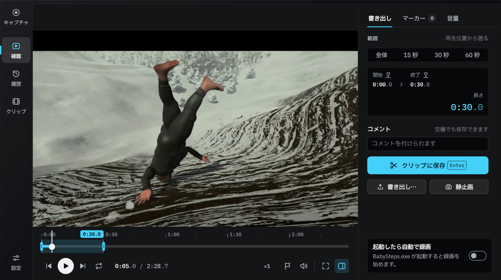
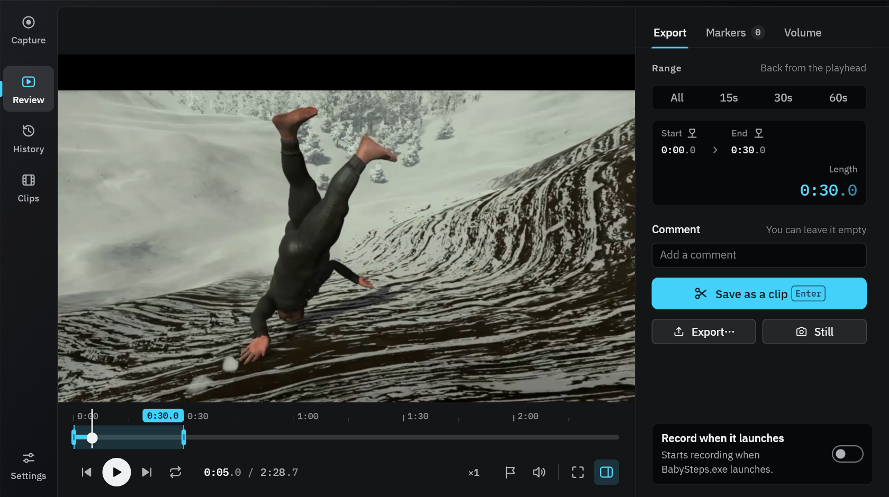

いまを録りながら、さっきを見返す Record now. Rewind to a moment ago.
ゲームやアプリを登録しておけば、起動と同時に録画が始まる。録画を止めずに見返して、気に入った範囲だけを MP4 に書き出せる。Register a game or an app, and recording starts the moment it launches. Look back without stopping, and export just the part you like as an MP4.
主な機能Features


確認画面：録画をタイムラインで見返すReview: look back along the timeline
録画中でも見返せるLook back while recording
録画を止めずにタイムラインを巻き戻して、さっきの場面を確認できる。気になった瞬間は Ctrl+Shift+R でマーカーを付けておける。Rewind the timeline without stopping the recording. Add a marker with Ctrl+Shift+R.
あとは自動で録画Auto-record
登録したゲームやアプリが起動すると、同時に録画が始まる。ログイン時の起動とトレイ常駐で、録り忘れがない。Recording starts when a registered game or app launches. Start at sign-in and stay in the tray, and nothing goes unrecorded.
軽量動作Light on your PC
GPU のハードウェアエンコーダで録画するので、ゲームや作業への負荷がほとんどかからない。Records with your GPU’s hardware encoder, so your game or work barely feels it.
すぐ書き出すExport right away
見返して範囲を選べば、その部分だけを MP4 として書き出せる。Select a range and export just that part as an MP4.
録画対象と残し方What to record, how long to keep
アプリ単位で録画できる（画面全体も可）。直近だけを残すリングバッファと、無制限録画を切り替えられる。Record one app (or the entire screen). Switch between a ring buffer that keeps only the last stretch and unlimited recording.
録る音を選べるPick the sounds you record
対象アプリの音に、選んだほかのアプリやマイクの音を足して録れる。全アプリの音にも切り替えられる。フレームレートは 30 / 60 / 120 fps から選べる。Record the app’s sound and add other apps or your mic, or switch to every app. 30 / 60 / 120 fps.
動作環境Requirements
- OS
- Windows 11 22H2 以降（x64）Windows 11 22H2 or later (x64)
- GPU
- ハードウェア H.264 エンコーダを持つ GPU（NVIDIA / AMD / Intel）A GPU with a hardware H.264 encoder (NVIDIA / AMD / Intel)
- ストレージStorage
- 録画先ドライブに 10 GiB 以上の空き10 GiB or more free on the recording drive
- そのほかAlso
- 履歴の検索・コメント・保護、日本語 / English UISearch, comments and protection in History; Japanese / English UI